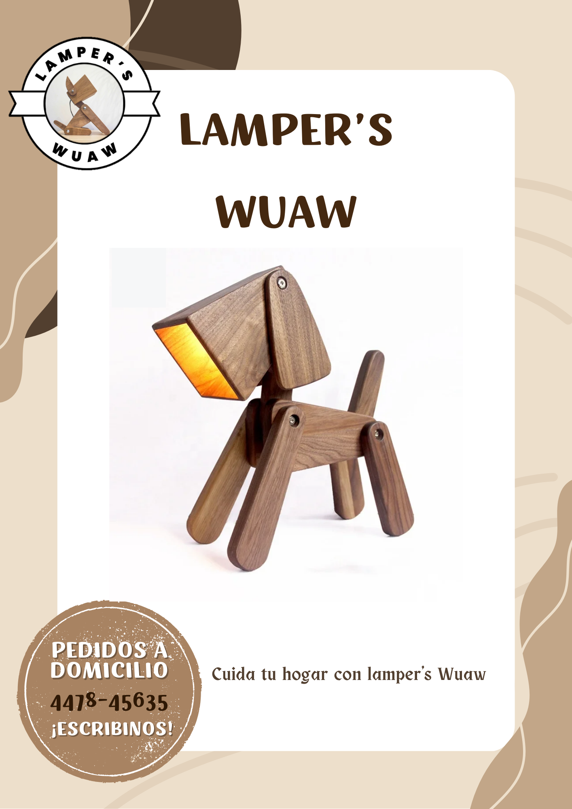

Este producto es una lampara pero que cumple una función de camara de vigilancia en si el producto se puede llamar "Perro espia", este producto tiene forma de perro que esta hecho de madera, pord entro tiene cables que funcionan para que el foco funcione el tamaño es mediano pero puede variar este producto es ideal para ocultar la camara.